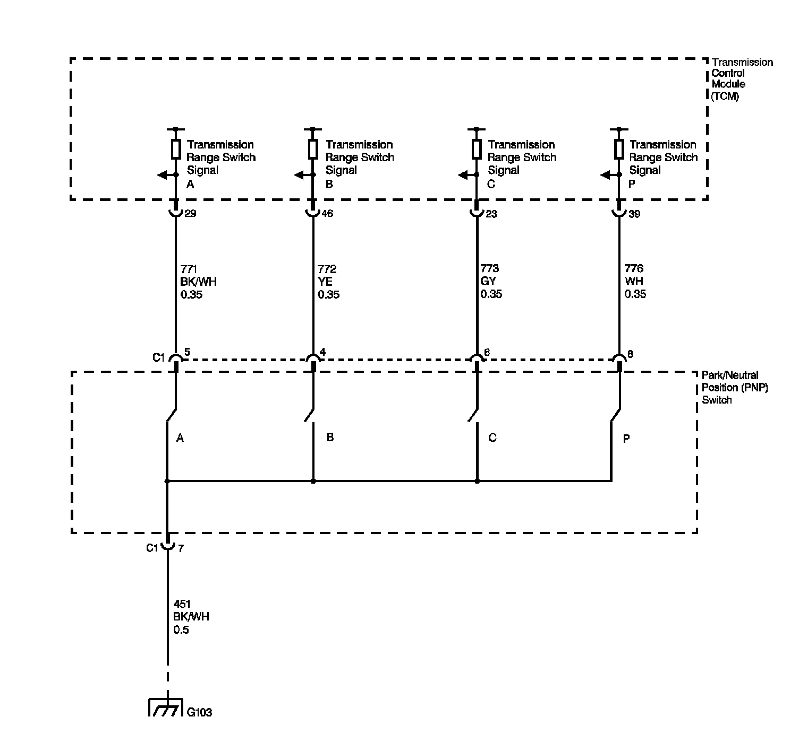
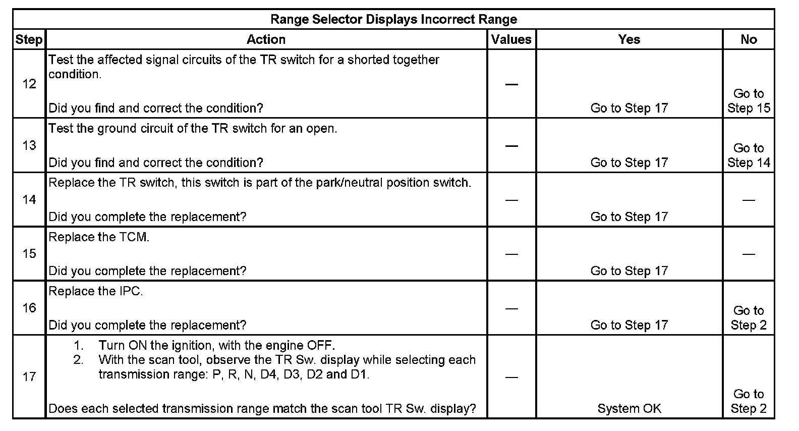

Range Selector Displays Incorrect Range
Range Selector Displays Incorrect Range

Circuit Description
The transmission range (TR) switch is part of the park/neutral position (PNP) and back-up lamp switch assembly, which is externally mounted on the transmission manual shaft. The TR switch contains four internal switches that indicate the transmission gear range selector lever position. The transmission control module (TCM) supplies ignition voltage to each switch circuit. As the gear range selector lever is moved, the state of each switch may change, causing the circuit to open or close. An open circuit or switch indicates a high voltage signal. A closed circuit or switch indicates a low voltage signal. The TCM detects the selected gear range by deciphering the combination of the voltage signals. The TCM compares the actual voltage combination of the switch signals to a TR switch combination chart stored in memory.
Diagnostic Aids
Refer to the Transmission Range Switch Logic table for valid combinations of switch signal circuits A, B, C and Parity. On the table, HI indicates an ignition voltage signal. LOW indicates a zero voltage signal.
Test Description
The numbers below refer to the step numbers on the diagnostic table.
4. By disconnecting the TR switch, the ground path of all TR switch circuits is removed and the TCM should recognize all circuits as open. The scan tool should display HI for all range signal states.
5. This step tests the TR switch wiring for an open or the lack of the signal voltage from the TCM.
6. This step tests the TR switch wiring and the TCM by providing a ground path through a fused jumper wire. When grounded, the scan tool range signal states should change to LOW.
7. This step tests the TR switch wiring and the TCM by providing a ground path through a fused jumper wire. When grounded, the scan tool range signal states should change to LOW.
8. This step tests the TR switch wiring and the TCM by providing a ground path through a fused jumper wire. When grounded, the scan tool range signal states should change to LOW.
9. This step tests the TR switch wiring and the TCM by providing a ground path through a fused jumper wire. When grounded, the scan tool range signal states should change to LOW.
Step 1 - Step 11:

Step 12 - Step 17:
